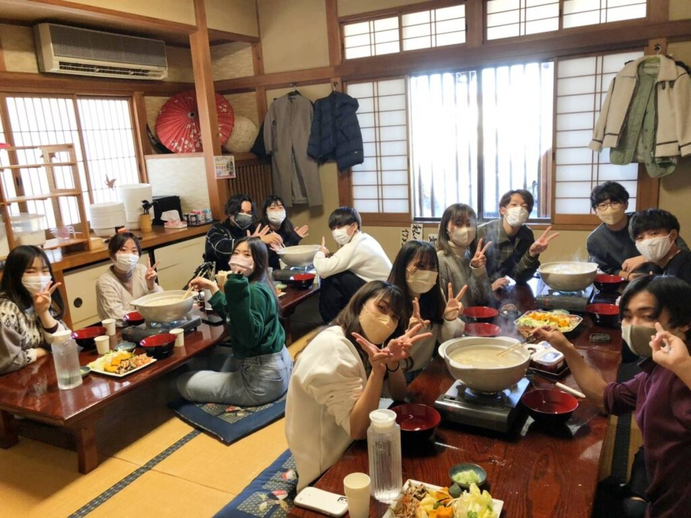
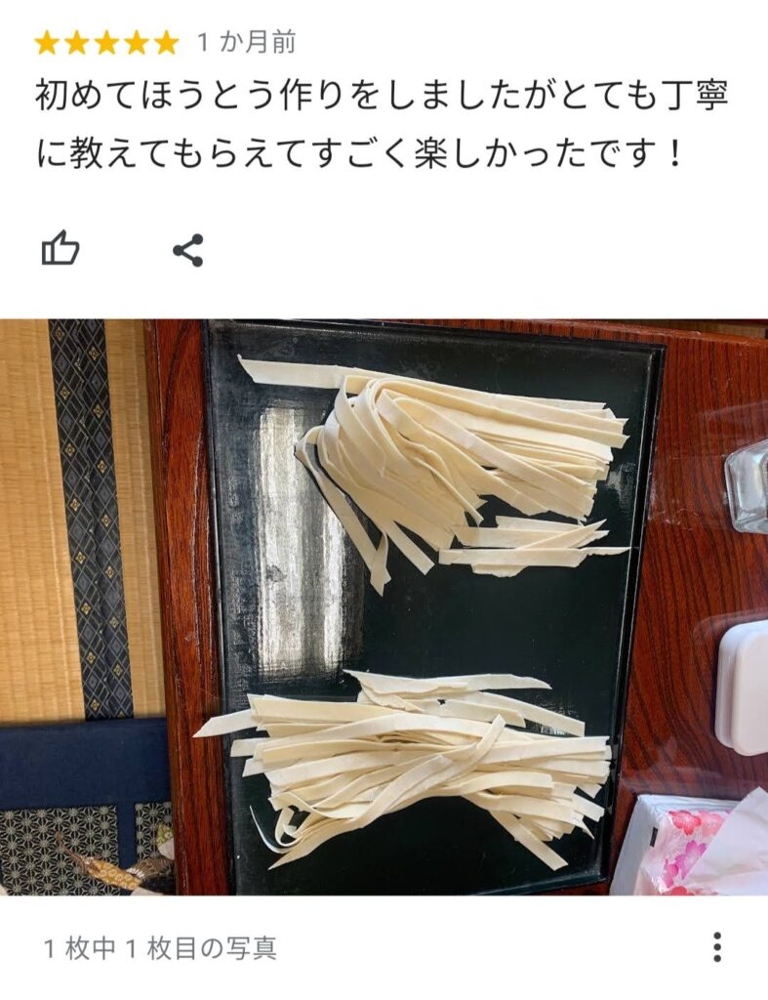
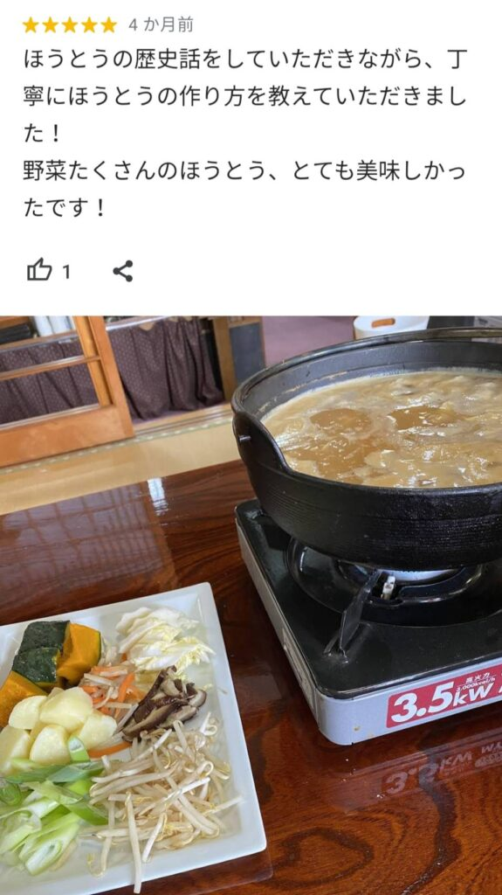

We offer reserved group lunches to share the local specialty Hoto. Ideal for travel agencies, schools, companies, and inbound groups.
We accommodate large groups (up to 80), which is rare near Kawaguchiko. Kofu store accepts up to 40 guests.
Recommended For
Application — We accept 24 hours a day
Contact Us →Group Dinners Accepted on Weekends and Holidays
In addition to weekday lunch, we accept group reservations for dinner on weekends and holidays.
Plan A
Same Menu as Lunch
You can order the same menu as lunch (Hoto, Soba, Unagi). Drinks ordered separately.
Plan B
Banquet Course with All-You-Can-Drink
10-course meal with 2.5 hours of all-you-can-drink. Exclusive reservations from 8 people.
Standard
Standard All-You-Can-Drink
Included in Course Price
Sour / Highball / Shochu / Sake / Plum Wine / Wine
Soft Drinks
*Beer not included. 2.5 hour limit
Premium
Premium All-You-Can-Drink
+¥500
Bottled Beer / Local Sake (Shichiken)
Koshu Wine
*Includes all standard drinks
Drink Menu
Drinks can be ordered separately.
Yamanashi Wine / Bottled Beer / Homemade Plum Wine / Whiskey / Soft Drinks
Weekends and Holidays Only / Reservation Required / Exclusive use 8-80 people
Banquet Course Details Here
View Banquet Courses →Hoto Lunch Details

Hoto is a beloved local dish made by simmering thick wheat noodles with seasonal vegetables in a miso-based soup.
当店のHoto Lunchでは、20名様以上の場合は複数名様が一緒に一つの鍋を囲んでお召し上がりいただく形式となっております。お席にてほうとうを煮込んでいただく流れとなりますので予めご了承ください。

Hoto Lunch 料金表
Mt. Fuji Spring Water Soba
A relaxing, authentic Japanese taste. Soba made with Mt. Fuji spring water is a safe and popular menu.

Unajyu
Crispy outside, incredibly fluffy inside. Enjoy the happiness with every bite of our secret sauce.
Recommended Toppings
山梨の和牛であるKoshu Wine Beefは各お食事におつけできます。
Drinks
Can be added to any dish. Bottled beer, homemade plum wine, whiskey, and soft drinks available.

Banquets Available at Night

8 courses with 10 dishes and 2.5h all-you-can-drink. Exclusive use from 8 members.
① Jiro-style
Jiro-style Pork Bone Soy Sauce Pot
¥5,000
② Gibier
Venison & Chicken Miso Hoto Pot
¥5,500
③ Spicy
鹿肉と大Prawnの旨辛鍋
¥5,500
④ Seafood
Oysterと大Prawnの味噌鍋
¥6,000
⑤ Seafood
Splendid Alfonsinoと帆立の黄金寄せ鍋
¥6,500
⑥ Premium Meat
Koshu Wine Beefと鶏の味噌Hoto Pot
¥6,500
⑦ Seafood Supreme
Ultimate All-Seafood Pot
¥7,000
⑧ Experience — 山梨を全部食べ尽くす
Abalone, Horse Sashimi, Hoto, Wine Beef Included
¥8,000
Tax / All Included
All courses 10 dishes & 2.5h drink / Exclusive use 8-80 people / Noodle making +¥2,200
Gallery



Reviews


FAQ
Yes. We accept groups up to 70 people (or more subject to availability).
Yes, about 7 vegetable types are included from the start.
Yes, our staff can speak English.
Yes, credit cards are accepted.
Yes, up to 3 tour buses can park.
Yes, the ingredients are strictly vegetables and dashi-free miso.
Yes, group lunches strictly require advance reservation.
About Hoto
Deliciousness of Hoto

Deliciousness of Hotoは、濃厚でコクのある味噌味の汁と、もちもちとした食感の麺によるものです。使用される野菜から出る自然な甘味が汁に溶け込み、味噌と絶妙に絡み合って、奥深い味わいを生み出します。かぼちゃは煮込むことで甘みが増します。
Nutritional Value

Full of assorted vegetables to balance vitamins and minerals safely.